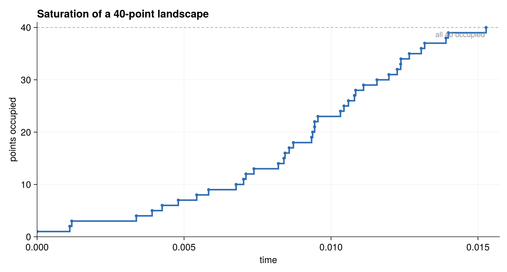
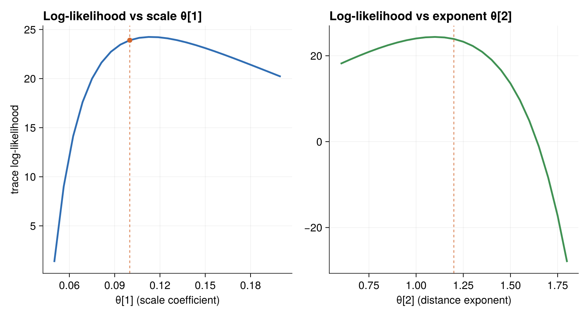

Running the Landspread Model
Landspread has two entry points: one that generates a trajectory, and one that scores a trajectory's log-likelihood at a chosen θ. Together they demonstrate the whole point of the θ seam — generate once, score at many parameter values.
Generating a trajectory
run_landspread(point_cnt; θ=SPREAD_THETA) builds a landscape, runs the spread to saturation, and returns the recorded trajectory:
function run_landspread(point_cnt; θ=SPREAD_THETA)
rng = Xoshiro(9437294723)
land = Landscape(point_cnt, rng)
trajectory = TrajectorySave()
sim = SimulationFSM(land, [Spread]; rng=rng, observer=trajectory, params=θ)
stop_condition = (land, step, event, when) -> false # run until no events remain
ChronoSim.run(sim, init_physical!, stop_condition)
return trajectory.trajectory
endThe stop condition always returns false; because the process is monotone, the simulation ends on its own when every point is occupied and no Spread event can be proposed. Note how θ is handed to the simulation through the params= keyword.
using ChronoSimExamples.LandSpread
traj = LandSpread.run_landspread(10)
Cumulative occupied points versus time for a single 40-point run. Because the process is monotone, the step curve only climbs, and it stops the moment the last point is occupied.
Scoring a trajectory at a parameter value
landspread_likelihood(point_cnt; θ=SPREAD_THETA) records a trajectory and then evaluates its trace log-likelihood at θ:
function landspread_likelihood(point_cnt; θ=SPREAD_THETA)
trajectory = run_landspread(point_cnt) # generated at SPREAD_THETA
# ... convert to an event vector, drop the initialize event ...
rng = Xoshiro(9437294723)
land = Landscape(point_cnt, rng)
sim = SimulationFSM(land, [Spread];
sampler=NextReactionMethod(), key_type=Tuple,
step_likelihood=true, likelihood_eltype=eltype(θ), rng=rng)
return ChronoSim.trace_likelihood(sim, init_physical!, event_vector; params=θ).loglikelihood
endTwo details make the θ seam work here:
- The trajectory is generated at the default
SPREAD_THETA, but the scoring uses whateverθyou pass. That is exactly the "score the same trace at a different θ" capability. likelihood_eltype=eltype(θ)lets the accumulator hold whatever element typeθhas — so a vector ofForwardDiff.Dualnumbers flows through, and the gradient of the log-likelihood in the parameters comes out.
LandSpread.landspread_likelihood(10) # score at SPREAD_THETA
LandSpread.landspread_likelihood(10; θ=[0.2, 1.0]) # score the same trace elsewhere
Scoring one recorded trace at a grid of parameter values. Sweeping either the scale coefficient θ[1] or the distance exponent θ[2] traces a smooth log-likelihood curve; the dashed line marks the generating SPREAD_THETA. This is the θ seam in one picture — generate once, score at many θ.
The tests
The tests in test/test_landspread.jl are short but pointed. Their header records why they exist:
Landspread previously had no functional test, which is how a silent no-write bug ... left it running zero events without anyone noticing. These tests pin that the process actually spreads and that the θ seam evaluates the same trace at different parameters.
The first test pins the saturation behavior. A ten-point run must produce exactly ten trajectory entries — one initialize event plus nine spreads, since every non-seed point gets occupied exactly once:
traj = with_logger(ConsoleLogger(stderr, Logging.Warn)) do
LandSpread.run_landspread(10)
end
@test length(traj) == 10
@test count(te -> te.event[1] == :Spread, traj) == 9The second test pins the θ seam. It scores the same recorded trace at two different parameter vectors and asserts both are finite and that they differ — the defining property that an estimator relies on:
ll, ll_shifted = with_logger(ConsoleLogger(stderr, Logging.Warn)) do
(LandSpread.landspread_likelihood(10),
LandSpread.landspread_likelihood(10; θ=[0.2, 1.0]))
end
@test isfinite(ll)
@test isfinite(ll_shifted)
@test ll != ll_shiftedThese two tests are the whole story for landspread: the process spreads and saturates, and its likelihood moves with θ. For a fuller record-and-differentiate workflow — including checking a gradient against a hand-derived analytic score — see the repair shop.